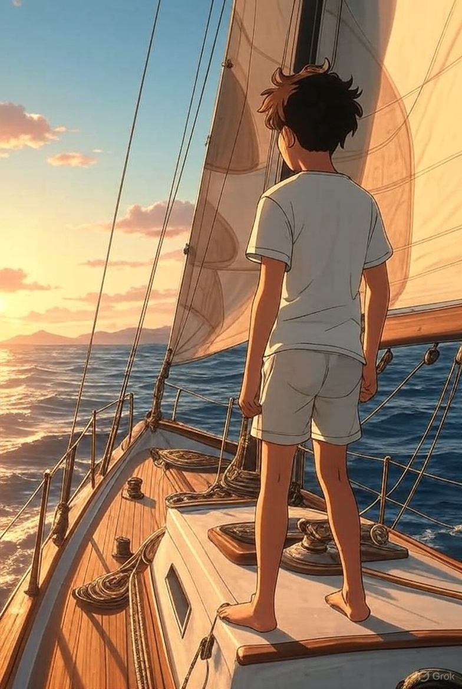

致我们耿直又勇敢的 Nathan
亲爱的Nathan，
祝你12岁生日快乐，也祝贺你顺利从小学毕业！
以下是我们非常喜欢的几段话，
希望这些文字能在你成长的路上给你温暖和力量，
愿你永远年轻，永远心里有光！
爱你的，
爸爸妈妈
Our dear Nathan,
Happy 12th birthday and congratulations on your Prep-school graduation! Here are the lines that we enjoy and hope it will brace you for the journey to come, and may you be young forever!
Love you,
Mother and Father
如果提前了解，你们要面对的人生
不知你们是否，还会有勇气前来
看见的和听到的
经常会令你们沮丧
世俗是这样的强大
强大到生不出改变他们的念头来
可是如果有机会，提前了解了你们的人生
知道青春，也不过只有这些日子
不知你们是否，
还会在意那些世俗希望你们在意的事情
比如占有多少才更荣耀
拥有什么，才能被爱
等你们长大，
你们会因绿芽冒出土地而喜悦
会对初升的朝阳欢呼跳跃
也会给别人善意，和温暖
但是却会在赞美别的生命的同时
常常，甚至永远地，忘了自己的珍贵
愿你在被打击时，记起你的珍贵，抵抗恶意
愿你在迷茫时，坚信你的珍贵，爱你所爱，行你所行，听从你心
无问西东
If it is possible to know the life you will confront in advance,
Will you still have the courage to embrace it?
What you’ve seen and heard may often dispirit you.
The mundane world is so solid
That even the thought of making a difference seems impossible.
But if you were given the chance to know your life lying ahead,
Knowing that youth is just these days but nothing more than that,
Will you still —
Care about the things that this mundane world expects you to care?
Like one's glory depends on how much he or she possesses?
Like one must own something in order to be loved?
When you grow up,
You will feel the joy of the green sprout,
You will cheer for the rising sun,
You will also bring kindness and warmth to others.
However, while giving your praise to others,
You always forget how precious you are.
May you remember your preciousness to resist malice during hard times.
May you have infinite faith in your preciousness when you lose your way.
Love what you love, do what you do, and listen to your heart.
May you be young forever!
— 爱你的爸爸妈妈
2021年
P.S. Nat，你站在帆船上迎着海风的样子，和你笑起来的样子，都是我们见过最美的光。🌊⛵️
🎧 Click to play 点击播放中文 👇